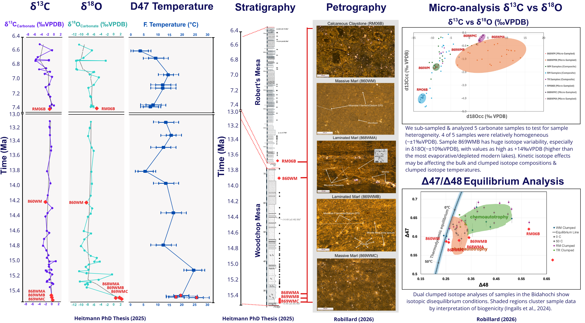
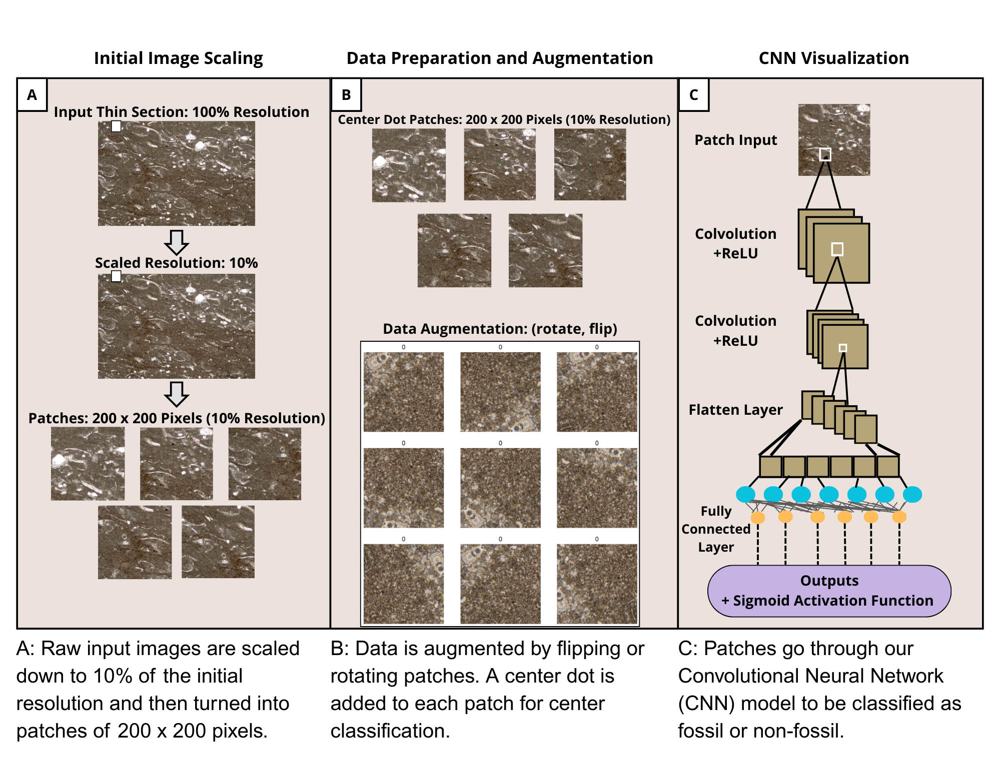

This project integrates carbonate clumped isotope geochemistry and petrography to investigate the formation of fine-grained lacustrine carbonates on the Colorado Plateau. I focus on how microbially mediated processes, micro-scale facies variability, and isotopic disequilibrium influence geochemical signals used in paleoenvironmental reconstructions.

In this project, I developed a convolutional neural network to classify petrographic thin section images as fossil or non-fossil. This work bridges geoscience and data science, demonstrating how automated image classification can accelerate paleontological and sedimentological analysis.